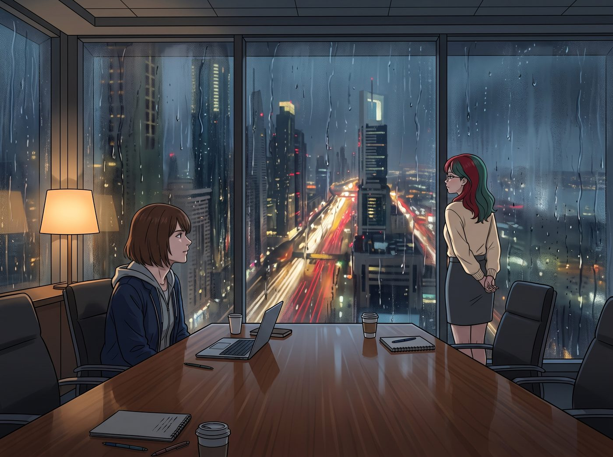
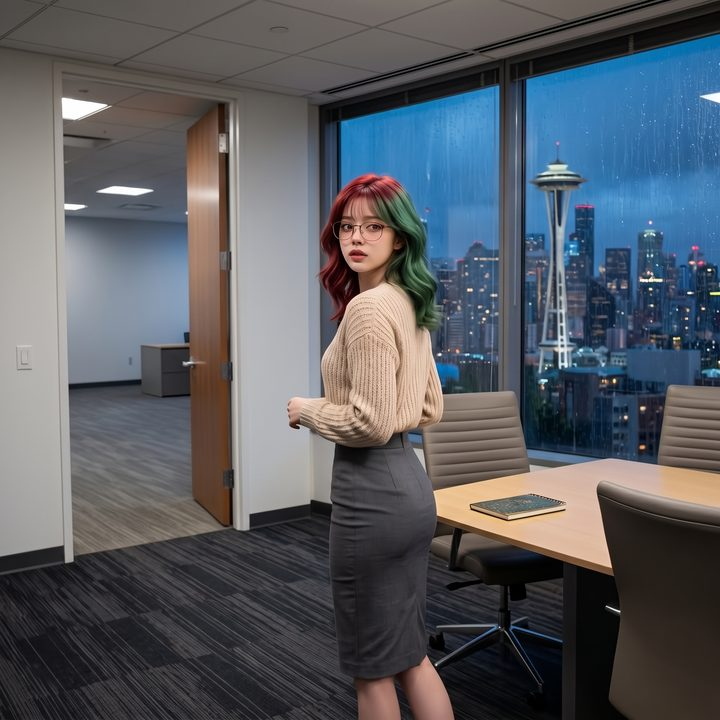

四十二樓的窗


西雅圖市中心，一棟摩天大樓的四十二層。
這是 Victoria 家族御用律師團的頂級會議室。剛才的兩個小時裡，Lily 用她那軟糯卻毫無破綻的合規邏輯，把一群穿著阿瑪尼西裝的資深律師按在會議桌上反覆摩擦，替 Victoria 的畫廊爭取到了最完美的信託剝離協議。
談判結束後，Victoria 帶著 Chloe 和 Kate 去隔壁的酒水吧台慶祝，順便阻止 Chloe 把那些純銀攪拌棒塞進口袋。
會議室裡，只剩下 Max 和 Lily。
一、背影
Lily 沒有跟著去。她獨自走到那整面巨大的落地窗前，雙手背在身後，靜靜地看著窗外。雨水在厚重的玻璃上蜿蜒流下，把四十二層底下的車流和行人扭曲成一條條模糊的光帶。
她站得很近，近到鼻尖幾乎要貼上玻璃。
坐在會議桌旁的 Max 抬起頭，目光落在那個背影上。
一瞬間，Max 覺得周圍的空氣彷彿被抽乾了。
在她的視網膜裡，那扇落地窗突然變成了 Blackwell 學院那座冰冷的屋頂；而那個穿著米色針織衫的單薄背影，跟當年站在屋頂邊緣、被逼到絕望的 Kate，重疊在了一起。
那一天，她的能力失效了。她沒辦法倒轉時間，只能站在雨裡，用顫抖的聲音一句一句地說，賭 Kate 會不會回頭。
Max 猛地站起身，心跳飆到了極限。她的右手下意識地向前伸出，手指因為恐慌而痙攣。
她已經準備好了。只要 Lily 往前傾一點點，她就會毫不猶豫地撕開時間，回到五分鐘前，無論要付出多少鼻血和頭痛。她不能再站在那樣的邊緣前，什麼都做不了。
「Lily……」Max 的聲音在發抖，「離開那裡。拜託……退後一步……」
二、退後兩步
聽到 Max 變了調的聲音，Lily 轉過身。
她沒有哭，也沒有任何異樣。她原本只是在看雨，腦子裡還在盤算剛才那份協議的第七條附款。但她看到了 Max——看到那隻伸在半空中、抖得不成樣子的手，看到她慘白的臉。
Lily 愣了一下，然後，某種了然的溫柔從她眼底浮了上來。
她沒有多問，只是從落地窗前退後了兩步，走到地毯中央，離玻璃遠遠的。
「放輕鬆，Max 學姐。」她輕輕歪了歪頭，嘴角勾起一抹安撫的笑，「我只是在看雨。我不會做傻事的。」
Max 雙腿一軟，跌坐回椅子上，大口大口地喘氣，手心裡全是冷汗。
Lily 倒了一杯溫水遞給她，然後輕輕靠在會議桌的邊緣，沉默了一會兒。
「不過，」她開口，聲音很輕，「妳剛才會怕，其實不是沒有道理的。」
三、十五歲的窗台
「這不是我第一次站在這麼高的窗戶前面。」
Lily 的目光越過 Max，落在那扇被雨水沖刷的玻璃上，語氣平靜得像在講述一份別人的報表。
「十五歲那年，我沒拿到某個常春藤預科營的名額，跟母親吵了這輩子最兇的一次架。我被逼到了極限。我打開了家裡十二樓的窗戶，站上了窗台。」
Max 握著水杯的手猛地收緊。
「那時候我是真的想過。我以為，如果我把自己放到那個邊緣上，她至少會害怕一次。會哭著叫我下來，告訴我成績不重要，我才重要。」
Lily 推了推圓框眼鏡。
「但她沒有。」
她模仿著母親當時那種冰冷、尖銳的語氣：
「『我們把所有的資源、金錢和人脈都傾注在妳身上，妳怎麼能用這種方式來威脅我們？妳怎麼能這麼殘忍地報答我們？妳對得起我們的投資嗎？』」
會議室裡一片死寂。窗外的雨聲顯得格外清晰。
Max 說不出話來。一個母親，在女兒站上窗台的時候，第一反應不是害怕失去她，而是憤怒於自己的投資可能血本無歸。
「那一刻，我突然就不想了。」Lily 轉過頭看著 Max，露出一個悲涼卻異常清醒的笑容，「因為我忽然明白了一件事：在一個把妳當成資產的系統裡，妳的死亡不是悲劇，只是一次惡意毀約。如果我真的做了，我只會變成她們下半輩子拿來賣慘、控訴女兒有多不孝的材料。我連最後那一步，都還在替她們提供情緒價值。」
「所以我從窗台上爬了下來。從那天起，我把自己變成了一台行政機器。既然她們要算帳，那我就用最完美的合規和最冷血的數據，把自己的人生接管回來。」
Max 聽得眼眶發酸。她終於明白了，為什麼 Lily 看什麼都要量化成報表和資產。那不是冷血，而是在她最絕望的那一刻，只有這套冰冷的邏輯，能保護她不被撕碎。
四、還會閃過嗎
「可是，Lily……」Max 輕聲問，「現在看著那扇窗戶的時候，妳心裡……真的一點都不會動搖嗎？」
Lily 低頭看著自己交疊的雙手，想了很久。
「以前會。」她誠實地說，「一個人在西雅圖的那幾年，每次看到高樓的窗戶，那個念頭就會像彈出式視窗一樣跳出來。好像那是唯一一個可以一次清空所有債務的快捷鍵。」
「那現在呢？」
「加入車廂之後，就很少了。」她頓了頓，「不是完全沒有。偶爾還是會閃一下。但現在它一跳出來，我會先想到別的東西。」
這時，會議室外傳來 Chloe 暴躁的吼聲：「Victoria！把那瓶十八年的威士忌放下！那是老娘先看到的！」
緊接著是 Victoria 傲慢的回擊：「妳這個土包子懂什麼叫品酒？給妳喝簡直是暴殄天物！」
還有 Kate 溫柔又無奈的勸架聲：「好啦好啦，我們把它裝進水壺帶回車廂，大家一起喝好不好？」
Lily 聽著門外的喧鬧，嘴角揚起了一個真誠而溫暖的笑。她伸出手，輕輕覆在 Max 那隻剛才抖得不成樣子的手背上。
「就是這些。」她說，「一個會為了我砸開地下室鐵門的維修工，一個把畫廊的信託交給我打理的傲慢名媛，一個會把烤糊的餅乾塞給我的天使……還有一個，明明自己嚇得發抖，還是第一個伸手要抓住我的攝影師。」
五、背對著窗
Lily 站直了身體，背對著那扇落地窗，面朝通往外面的門。
「外面的世界也許依然是一本巨大的爛帳。」她眨了眨眼，恢復了那副乖巧腹黑的模樣，「但我在二號車廂找到了這輩子回報率最高的投資組合。我還要留著自己，去幫我們多申請幾筆預算呢。」
Max 的眼淚終於掉了下來。但她笑著擦掉，從包裡拿出那台寶麗來。
這一次，鏡頭沒有對準雨中的窗，也沒有對準任何邊緣。它對準的是站在地毯中央、背對著玻璃、面朝著門外那片吵鬧聲的 Lily。
「喀嚓。」
Max 沒有在相紙背面寫任何規則或註解，只畫了一個大大的笑臉。
她知道，那個十五歲站在窗台上的女孩，不會因為一個下午就徹底消失。那個念頭也許還會在某個雨天、某扇窗前閃過一下。但下一次它出現的時候，這個女孩會記得回頭——回頭看看門外那些正在為一瓶威士忌吵成一團的人，還有這個永遠會第一個伸出手的攝影師。